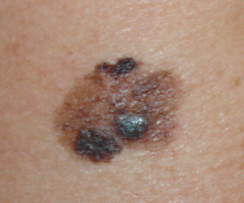

Lesões de Carcinoma Basocelular (CBC)
O que é?
É um tipo de câncer de pele que surge nas células basais, que são as células na camada mais profunda da epiderme. Essas lesões geralmente aparecem como pequenos nódulos perolados ou manchas escamosas, que podem crescer lentamente.
Como se manifesta
Geralmente, o CBC se apresenta como uma lesão em forma de nódulo perolado, que pode sangrar facilmente. Pode também aparecer como uma placa fina e avermelhada ou uma lesão que parece uma cicatriz.
Onde pode aparecer
É mais comum em áreas de pele expostas ao sol, como o rosto, orelhas, pescoço e couro cabeludo.
Causas
A exposição prolongada ao sol é o principal fator de risco para o seu desenvolvimento.
Importância do diagnóstico precoce
É um câncer de pele que raramente se espalha para outras partes do corpo, mas pode invadir e destruir os tecidos circundantes. O tratamento precoce do CBC é importante para prevenir danos mais graves.
Tratamento
Geralmente envolve a remoção cirúrgica da lesão. Em alguns casos, outros tratamentos, como curetagem e eletrocoagulação ou quimiocirurgia, podem ser utilizados.
Prevenção
Envolve a proteção da pele contra a exposição ao sol, utilizando protetor solar, roupas de proteção e óculos de sol.
Carcinoma de Células Escamosas (CEC)
O que é?
É um tipo de câncer de pele não melanoma, que se desenvolve nas células escamosas da camada mais externa da pele. É o segundo tipo mais comum de câncer de pele, após o carcinoma de células basais.
Como se manifesta
Pode aparecer como manchas avermelhadas, espessas e ásperas, crostas ou sangrar. Também podem se assemelhar a feridas que não cicatrizam.
Localização
Mais comum em áreas expostas ao sol, como face, lábios, orelhas, couro cabeludo, ombros, pescoço, dorso das mãos e antebraços.
Danos Solares
A pele ao redor das lesões pode apresentar sinais de danos solares, como rugas, alterações de pigmentação e perda de elasticidade.
Sinais e Sintomas
As lesões podem sangrar ou coçar, e podem se desenvolver em cicatrizes, feridas na pele e outras áreas de lesões na pele.
Tratamento
O tratamento depende do tamanho, profundidade, localização e características da lesão, bem como da idade e condições clínicas do paciente.
Os mais comuns: Cirurgia, crioterapia, curetagem, eletrodissecção, eletrocautério, terapia fotodinâmica e quimioterapia local.
Prevenção
É fundamental proteger a pele do sol, usando protetor solar, roupas de proteção e procurando a sombra durante os horários de maior radiação solar. E examinar regularmente a pele e procurar um médico caso notar alguma mudança ou lesão suspeita.
⚠️ O diagnóstico precoce e o tratamento adequado são essenciais para garantir um bom prognóstico e evitar complicações.

Nevos, Pintas ou Sinais
O que é?
São lesões cutâneas comuns, geralmente de cor escura, resultantes da proliferação de células que produzem melanina. A maioria das pessoas tem nevos e, em geral, não são perigosos.
⚠️ É importante observar qualquer alteração no tamanho, forma ou cor dos nevos, pois algumas podem indicar um risco aumentado de melanoma.
Nevos Melanocíticos
São os nevos mais comuns, também conhecidos como pintas.
➡️ Apresentam forma redonda ou oval, bordas regulares e cor uniforme.
Nevos Atípicos
São nevos com características que os tornam mais suscetíveis a se transformarem em melanoma.
➡️ Apresentam forma irregular, bordas irregulares e cores variadas.
Melanoma
É um tipo de câncer de pele que pode se desenvolver a partir de um nevo, especialmente um nevo atípico.
Risco
Presença de muitos nevos, especialmente nevos atípicos, aumenta o risco de melanoma.
Prevenção
Proteção solar, autoexame regular e consulta com especialistas.
Acrocórdons, Fibromas Moles ou Pólipos Fibroepiteliais
O que é?
Pequenas elevações na pele que parecem pequenas verrugas, mas são macias, suaves e com um pedúnculo fino.
São tumores benignos, ou seja, não são cancerígenos, e geralmente não causam problemas, a não ser que causem desconforto estético ou irritação.
⚠️ Embora geralmente benignos, podem estar associados à resistência à insulina e, portanto, à possibilidade de pré-diabetes ou diabetes.
Aparência
Pequenas protuberâncias de pele, geralmente da cor da pele, mas podem ser ligeiramente escuras.
Macias, suaves e podem ser facilmente removidas por um profissional.
Localização
Mais comuns no pescoço, axilas, virilha e pálpebras.
Tratamento
➡️Crioterapia: Uso de nitrogênio líquido para congelar e remover o acrocórdon.
➡️Excisão simples: Remoção com bisturi ou tesoura, seguida de cauterização.
➡️Eletrodissecção: Remoção com corrente elétrica, seguida de cauterização.
⚠️ Nunca tentar remover acrocórdons por conta própria, pois pode causar infecção ou cicatrizes indesejadas.

Lipoma
O que é?
É um tumor benigno, não cancerígeno, composto por células de gordura maduras, que se acumulam em uma cápsula fibrosa e se desenvolvem sob a pele. São caracterizados como nódulos moles, geralmente indolor e de crescimento lento, e não necessitam de tratamento a menos que causem desconforto ou incômodo estético.
Localização
Podem aparecer em qualquer parte do corpo, mas são mais comuns no tronco, membros proximais, ombros, pescoço e axilas.
Aparência
Geralmente, são nódulos moles, arredondados ou ovais, que podem ser facilmente movidos sob a pele.
Tratamento
Se causarem dor, incômodo estético ou crescimento rápido, a remoção cirúrgica pode ser recomendada.
➡️Em alguns casos, a lipoaspiração pode ser utilizada para remover o lipoma, especialmente se for pequeno e localizado em tecidos subcutâneos.
Ceratose Actínica, Queratose Actínica ou Ceratose Solar
O que é?
É uma lesão de pele pré-cancerosa que resulta de exposição prolongada ao sol.
Sintomas
➡️Manchas escamosas e ásperas: A ceratose actínica geralmente se manifesta como manchas na pele com superfície rugosa, que podem ser de cor amarelada, rosada, avermelhada ou marrom.
➡️Pele seca e áspera ao toque: As lesões podem ser mais facilmente sentidas do que vistas.
➡️Dor, coceira ou queimação: Em alguns casos, a ceratose actínica pode causar dor, coceira ou sensação de queimação.
➡️Sangramento ou feridas: Raramente, as lesões podem sangrar ou desenvolver feridas persistentes.
Causas
➡️Exposição prolongada ao sol: A principal causa da ceratose actínica é a exposição crônica aos raios ultravioleta (UV) do sol.
➡️Idade: A ceratose actínica é mais comum em pessoas idosas, mas pode ocorrer em pessoas mais jovens.
Fatores de Risco
➡️Pessoas de pele clara, cabelos loiros ou ruivos, e olhos claros: Estes indivíduos são mais suscetíveis à ceratose actínica devido a menor proteção contra os raios UV.
➡️Trabalho ao ar livre: Pessoas que trabalham ao ar livre, especialmente em áreas com alta radiação solar, têm maior risco.
➡️Queimaduras solares: Histórico de queimaduras solares aumenta o risco de desenvolver ceratose actínica.
Tratamentos
➡️Medicamentos tópicos: Geralmente envolve o uso de medicamentos tópicos, como 5-fluorouracil, imiquimod, diclofenaco, ácido salicílico e outros, que podem ajudar a eliminar as lesões.
➡️Procedimentos cirúrgicos: Em alguns casos, o tratamento pode envolver procedimentos cirúrgicos, como crioterapia (congelação), eletrocoagulação, curetagem e excisão, para remover as lesões.
➡️Fototerapia: Utiliza a luz ultravioleta para tratar as lesões.
Prevenção
➡️Evitar a exposição ao sol em horários de pico
➡️Usar protetor solar
➡️Evitar bronzeamento artificial

Ceratose Seborreica ou Verruga Senil
O que é?
É um tumor benigno de pele, geralmente marrom, com aparência escamosa e ligeiramente elevada.
É uma lesão comum, especialmente em adultos e idosos, que não é cancerígena e, na maioria dos casos, não causa dor ou incomodo.
Crescimento geralmente lento e pode aumentar com o tempo.
Localização
Mais comuns no tronco, costas, rosto e pescoço.
Aparência
Lesões arredondadas ou irregulares, com coloração marrom, cinza ou preta.
➡️Pode ter aspecto verrucoso ou escamoso.
Causas
A causa exata da ceratose seborreica é desconhecida, mas acredita-se que fatores genéticos e idade possam influenciar o seu desenvolvimento.
➡️Exposição solar prolongada e danos solares podem contribuir para a sua formação.
Tratamento
A ceratose seborreica é geralmente benigna e não requer tratamento.
➡️Se as lesões forem esteticamente desagradáveis ou causar desconforto, podem ser removidas por diversos métodos, como crioterapia, eletrocoagulação ou curetagem.
➡️A proteção solar e a hidratação da pele podem ajudar a prevenir o surgimento de novas lesões.
⚠️ A ceratose seborreica não é contagiosa e não se transforma em câncer de pele.
Milium
O que é?
É um pequeno cisto epidérmico, uma bolinha branca e dura que se forma sob a pele quando a queratina, uma proteína fibrosa, fica presa.
Causas
A exposição excessiva ao sol, a obstrução das glândulas sebáceas e fatores genéticos podem contribuir para o aparecimento de miliuns.
Tratamento
O tratamento ideal para remover miliuns é feito por um dermatologista ou profissional de saúde, que pode usar uma pequena agulha para espremer o cisto.
Prevenção
Uma rotina de cuidados com a pele adequada, com produtos que ajudem a controlar a oleosidade e a desobstruir os poros, pode ajudar a prevenir o aparecimento de novos miliuns.
⚠️ Não tente remover em casa!
Evite tentar espremer ou apertar os miliuns, pois isso pode causar danos à pele, cicatrizes e até mesmo infecção.
Verruga
O que é?
É uma lesão cutânea benigna causada por uma infecção viral, principalmente pelo papilomavírus humano (HPV).
Elas são comuns, especialmente em crianças e adolescentes, e podem aparecer em qualquer parte do corpo.
Embora geralmente inofensivas, podem ser esteticamente indesejadas ou causar desconforto.
Tipos
➡️Verrugas Vulgares: São as mais comuns, aparecendo como saliências ásperas na pele.
➡️Verrugas Planas
➡️Periungueais (ao redor das unhas), e outras formas.
Transmissão
Ocorre principalmente por contato direto com pessoas ou objetos infectados.
Sintomas
As verrugas podem ser pequenas ou grandes, e geralmente são indolores, mas podem causar desconforto se localizadas em áreas como os pés.
Tratamento
O tratamento pode variar, desde a aplicação de produtos tópicos a procedimentos como crioterapia ou cirurgia.
Prevenção
Evitar o contato direto com verrugas de outras pessoas, usar chinelos em locais públicos, e a vacinação contra o HPV.
Unha Encravada (Onicocriptose)
O que é?
Ocorre quando uma parte da unha penetra na pele ao redor, causando inflamação, dor e até mesmo infecção. A onicocriptose pode afetar qualquer unha, mas é mais comum no dedão do pé.
Quando é necessária a retirada cirúrgica da unha encravada?
➡️Infecções graves: Se estiver associada a uma infecção grave, com pus e inflamação intensa, a remoção da unha pode ser necessária para controlar a infecção.
➡️Recorrência: Se a unha encravada for recidiva com frequência, mesmo após tratamento conservador, a cirurgia pode ser uma opção para prevenir a recorrência.
➡️Dor intensa e incapacitante: Em alguns casos, a dor causada pela unha encravada pode ser muito intensa e incapacitante, tornando a cirurgia necessária para aliviar o sofrimento do paciente.
➡️Danos à matriz da unha: Se causar danos significativos à matriz ungueal, a cirurgia pode ser necessária para corrigir o problema e evitar deformações futuras.
Graus da onicocriptose
➡️Grau I: A unha encrava na pele da lateral do dedo, provocando vermelhidão, inchaço e dor. Não há sinais de infecção ou pus.
➡️Grau II: A unha encravada funciona como um corpo estranho e mantém a inflamação ativa, podendo causar infecções bacterianas.
➡️Grau III: A unha encravada causa dor intensa, inchaço e secreção de pus na pele ao redor. Há sinais de infecção crônica e formação de tecido cicatricial.
Causas
➡️ Cortar as unhas muito curtas ou arredondar os cantos.
➡️ Usar sapatos apertados, estreitos ou de bico fino.
➡️ Trauma ou lesão na unha ou no dedo.
➡️ Alterações anatômicas do dedo ou da unha.
➡️ Doenças que afetam o crescimento ou a forma da unha, como psoríase, fungos ou diabetes.
Sintomas
➡️ Dor ao tocar ou pressionar a unha ou o dedo.
➡️ Vermelhidão e inchaço na pele ao redor da unha.
➡️ Secreção de pus ou sangue na pele ao redor da unha.
➡️ Sensação de calor ou febre no dedo.
➡️ Dificuldade para caminhar ou usar calçados.
Tipos de cirurgias
➡️Cantoplastia: O canto da unha encravada é removido, verticalmente, até à matriz ungueal, com o objetivo de evitar que a unha volte a crescer lateralmente.
➡️Matricectomia: A matriz ungueal, responsável pelo crescimento da unha, é removida, o que previne o crescimento futuro da unha nessa área.
➡️Unectomia total: A unha é removida completamente, geralmente em casos mais graves ou recorrentes.
Prevenção
➡️ Cortar as unhas de forma reta e não muito curtas.
➡️ Usar sapatos adequados ao tamanho e formato dos pés.
➡️ Evitar sapatos apertados, estreitos ou de bico fino.
➡️ Proteger os dedos de traumas ou lesões.
➡️ Tratar as doenças que afetam as unhas ou os pés.


Cisto Epidérmico ou Cisto Sebáceo
O que é?
É um caroço benigno que se forma na pele, geralmente na face, pescoço ou tronco, mas pode ocorrer em qualquer parte do corpo.
Aparência
Pode parecer uma bolha, nódulo ou caroço; a cor pode ser da pele, esbranquiçado, amarelado ou avermelhado e pode variar em tamanho, desde pequenos até maiores.
Causas
➡️Entupimento: Ocorre quando um folículo piloso ou glândula sebácea fica entupido.
➡️Acúmulo de queratina: A queratina, proteína da pele, cabelo e unhas, se acumula dentro do cisto.
➡️Células mortas: Células mortas da epiderme também podem se acumular, formando o cisto.
Sintomas
Geralmente não causa dor ou desconforto, a menos que se inflame ou infecte.
➡️ Se inflamar, pode apresentar vermelhidão, inchaço e dor.
➡️ Se infectar, pode causar formação de pus e aumento da temperatura local.
Tratamento
➡️Monitoramento: Pequenos cistos não inflados ou infectados podem ser apenas monitorados.
➡️Remoção: Em caso de inflamação ou infecção, pode ser necessário drenar ou remover cirurgicamente o cisto.
➡️Cirurgia: A remoção cirúrgica pode ser feita por incisão elíptica, com ou sem biópsia, dependendo do tamanho e localização.
➡️Medicação: Em casos de inflamação, pode ser usada triancinolona intralesional.
Condiloma (Verruga Genital)
O que é?
É uma infecção sexualmente transmissível (IST) causada pelo Papilomavírus Humano (HPV).
As lesões, que se assemelham a verrugas, podem aparecer na região genital, anal ou oral.
A transmissão ocorre principalmente através do contato sexual, mas também pode ocorrer através do contato com superfícies contaminadas.
Aparência
Lesões em forma de verrugas, que podem ser pequenas ou grandes, planas ou elevadas.
Sintomas
A maioria dos casos não apresenta sintomas, mas algumas pessoas podem apresentar coceira, irritação ou desconforto.
Tratamento
O tratamento visa remover as verrugas e controlar a infecção pelo HPV, podendo incluir métodos como crioterapia (congelamento), cirurgias, imunoterapia e medicamentos tópicos.
➡️ É importante tratar o condiloma para prevenir complicações e reduzir a transmissão do HPV.
Prevenção
Vacinação contra HPV, uso de preservativos e prevenção de contato com superfícies contaminadas.
Quer se livrar daquela lesão indesejada de forma segura e eficaz?
Agende sua consulta conosco e dê o próximo passo para uma pele mais saudável!
Entre em contato e marque sua avaliação!
 Agende seu horário
Agende seu horário